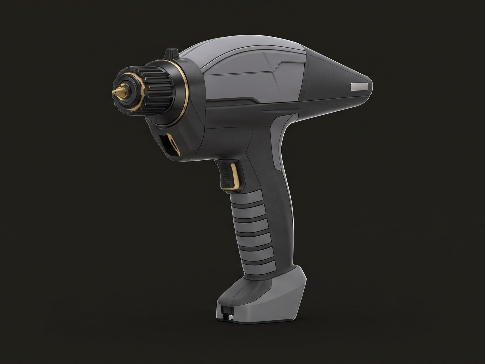
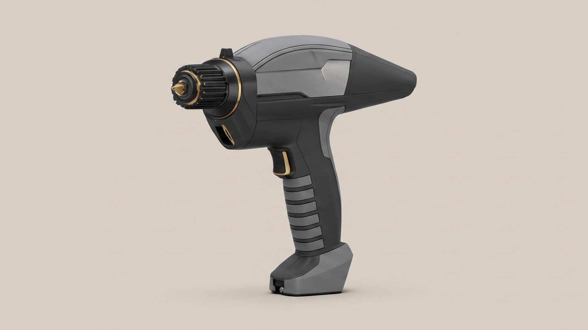
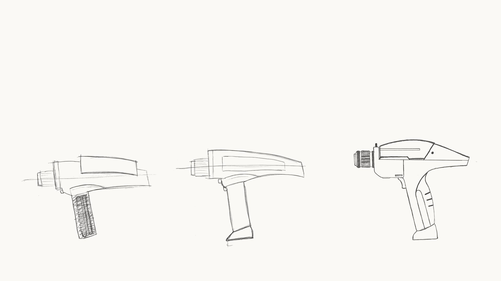
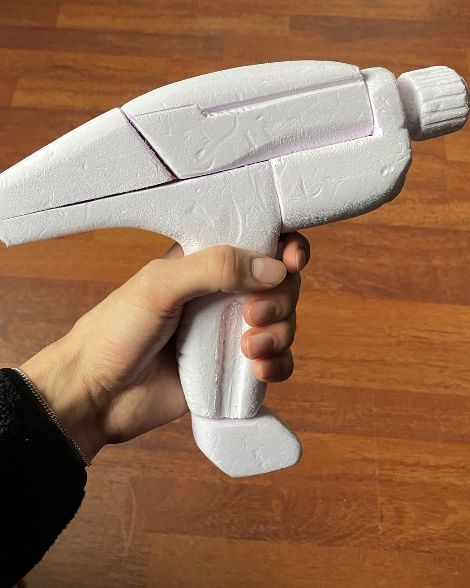
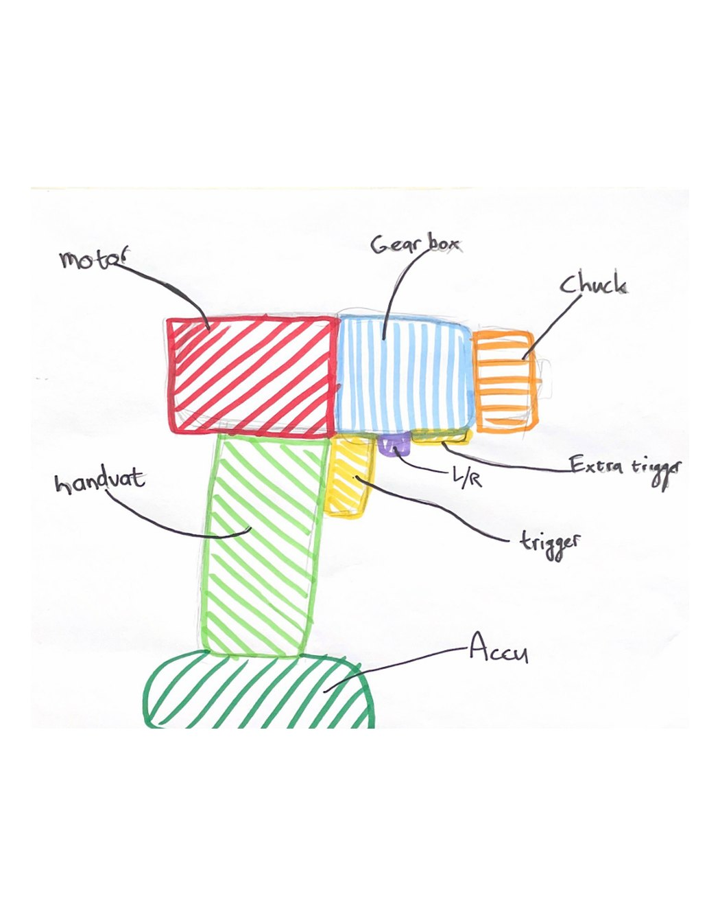

No hand left for the screw
With the drill in the only working hand, nothing holds the screw upright or on the right spot.
A cordless drill for people who work with one hand, shaped like a piece of science fiction.

Most cordless drills quietly assume two hands: one to hold the tool and one to hold the screw, steady the work or twist the chuck open. For someone with one working hand, hanging a painting can end with asking somebody else for help.
In this school assignment I designed a power tool for that user. I chose the market, the user and the look myself and based every decision on research: I did the jobs with one hand, watched and interviewed someone who has one working hand, and used hand measurements from DINED.
The persona I designed for is a film editor and science fiction fan. That is where the form comes from: a compact drill with the silhouette of a film prop, in matte black with gold details.

Solo project
I did this project on my own, from the first user test to the final form.
I mapped the use step by step, compared the layouts of existing drills, sketched the form, visualised the sketches with Vizcom and cut a full size foam model to check it in the hand. I finished with a build plan for the CAD model.
Everything a drill asks of a second hand had to be solved another way.
With the drill in the only working hand, nothing holds the screw upright or on the right spot.
Opening a chuck normally takes two hands. The user I tested with had to brace the drill against his body.
Pushing and aiming with one hand is hard. The person I interviewed leans his arm on the wall for support.
On a standard drill the tool has to be put down before the battery can come out.
Every switch has to be worked by the hand that is already holding the tool, and with little force.
The form had to suit the user and the brand, stay compact and still leave a flat face for a label.
A drill laid out so that one hand can do every step, with a form its user would pick off the shelf.
A pointed tip punches a small starting hole, so the screw stands by itself before the drill takes over.
A rounded collar with deep ribs gives enough grip to turn the chuck with the same hand that holds the tool.
The switch sits at the thumb and the trigger is shaped to the finger, so both need very little force.
A rounded handle with soft ribbed bands, sized with DINED hand measurements, fills the hand and does not slip.
A single big button frees the battery, which turns a battery swap into a one handed job.
The silhouette borrows from film props. A full size foam model confirmed the proportions in the hand.


